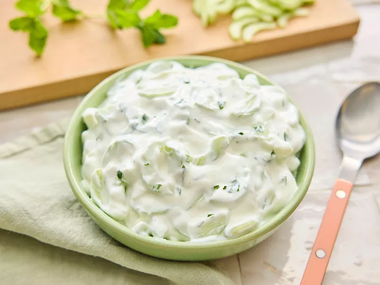
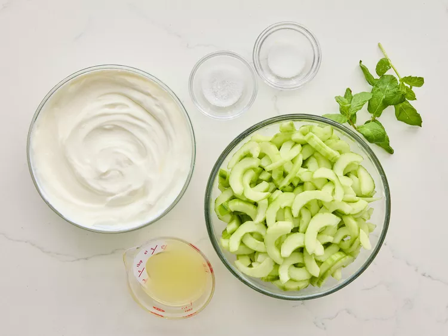
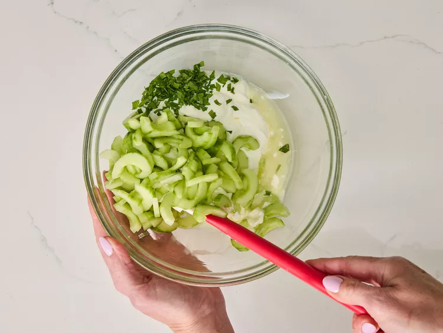

Raita is a deliciously creamy Indian side dish and refreshing dip. This recipe is easy to make at home with thick yogurt, sliced cucumber, lemon juice, and mint. It's best to make raita early in the day to let the flavors blend and intensify. Add more fresh mint to taste.
For 24 servings
Gather the ingredients.

Stir yogurt, cucumber, lemon juice, mint, sugar, and salt together in a bowl. For best results cover and refrigerate the raita for a few hours, or preferably overnight.

To make your own Greek yogurt, place 2 ½ cups of plain, nonfat yogurt into a strainer lined with several layers of cheesecloth. Set the strainer over a bowl, then cover and refrigerate overnight. Discard the liquid collected in the bowl and proceed with the recipe.
Don't be tempted to use dried mint in this recipe as the flavor is just not the same.
Serve this cool, refreshing yogurt sauce with my lamb tagine and Moroccan couscous recipes posted on this site.
Home